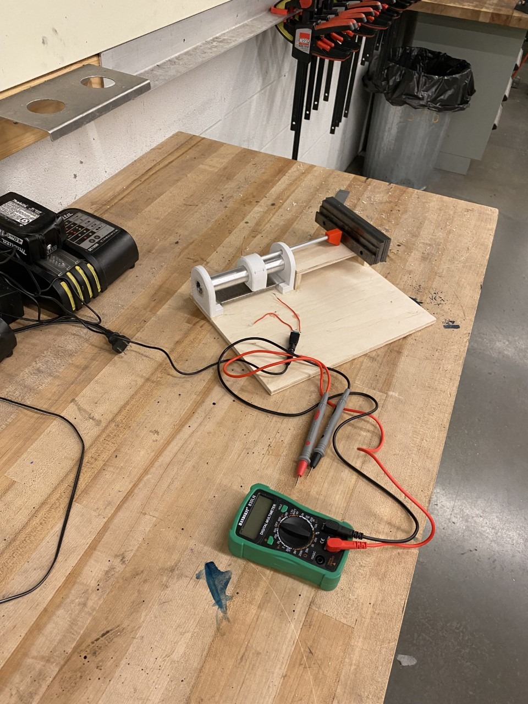

Garage/Personal Shop
This is a 28' x 30' garage/shop. This is a space that will be meant for creating. Once complete, there will be a full machine shop, welding station, car lift, and rapid prototyping station. My hope is that this area is somewhere that you can go to create anything you want.

Timeline
This projects main construction spanned over 5 months. The project is still a work in progress.
Design
All of the design work was done in solidworks to determine exactly how big things needed to be to fit what we wanted. Next, all of the permit work and design documents were created by me and submitted to the city for approval.
- Measure between 0cm and 10cm
- Tolerance of +/-0.5cm
We used the theory of a voltage divider for the design. A nichrome wire was wound around a piece of acryllic that acted as a single resistor. This resistor was split into 2 resistors with a copper wire. The resistance that the output voltage experienced was determined by how far along the copper wire was on the resistive coil. This distance was directly related to the length of the object being measured.

Calibration
To calibrate, we used machine shop guage blocks to as a reference distance then recorded the voltage output based on the known measurement. A voltage vs distance graph was plotted and the equation of the line was taken to be the calibration equation. To obtain the tolerance, we used the calibration equation with the already recorded voltages to collect a set of calculated lengths. Since each voltage corresponds to a true length and now a calculated length, a deviation between the two can be calculated by subtracting the calculated length from the true length. A graph of true length to deviation was plotted and the maximum and minimum y values were taken to be the +/- values for the tolerance.
Performance
Although we did hit the requirement of the +/-0.5cm during calibration, we did not come close to this during presentation. Instead, we were calculating values +/- 3cm from the true length. We determined that due to:
- the resistive wire shifting along the acryllic path
- the wired connections becoming loose at the power supply and measurement position
- the copper measurement wire not maintaining a consistent contact point to the resistive coil
- the copper measurement wire oxidizing from calibration to presentation
Recomendations for Future Iterations
- Construct out of more accurate material than 3D printed components and wood, potentially 80/20 aluminum extrusion
- Develop a resistor that was homogeneous and linear that can be interacted with without creating inconsistencies, such as an epoxy+carbon blended pad
- Interacting with the resistive component at a single point to reduce inconsistencies